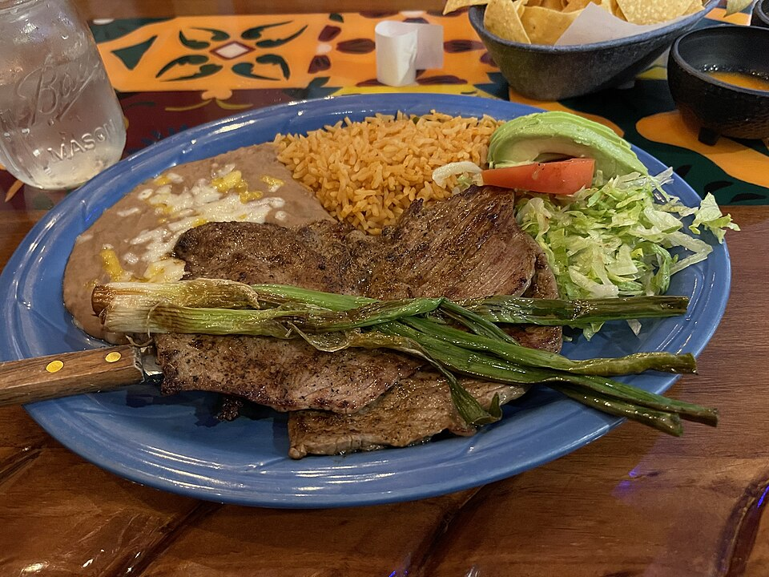

Interior Gastronomy
Moving beyond commercial Tex-Mex shortcuts, our chefs prepare authentic regional specialties including Mole Poblano, Bistec a la Mexicana, and Carnitas Michoacán from scratch daily.
Discover Parrilla Dishes →Welcome to Three Amigos Mexican Grill & Cantina, Plaza Midwood’s landmark destination for authentic interior Mexican cooking since 2010. We celebrate time-honored family recipes: char-grilled Carne Asada with blistered scallions, hand-rolled Enchiladas Suizas in tomatillo cream, rich Mole Poblano, and freshly shaken 100% blue agave margaritas.

Hand-pressed corn tortillas, slow-simmered scratch salsas, and true regional pride.
Moving beyond commercial Tex-Mex shortcuts, our chefs prepare authentic regional specialties including Mole Poblano, Bistec a la Mexicana, and Carnitas Michoacán from scratch daily.
Discover Parrilla Dishes →Warm corn tortillas pressed fresh, ripe Hass avocados mashed in stone molcajetes tableside, and four distinct house-roasted chile salsas prepared each morning.
Explore Moles & Enchiladas →A full-service Mexican cantina featuring premium tequilas, artisanal Oaxacan mezcals, hand-shaken fresh lime margaritas with sea salt, and ice cold Mexican draft cervezas.
View Cantina Cocktails →Our famous Enchiladas Suizas feature three soft corn tortillas rolled with tender shredded chicken tinga, blanketed in a roasted tomatillo cream sauce, covered with melted whole Chihuahua cheese, and garnished with thinly sliced sweet white onions and fresh cilantro leaves.
Explore Enchilada Specialties →

We never use sour mix or commercial concentrates. Our signature Three Amigos Margarita is freshly shaken with 100% blue agave reposado tequila, fresh squeezed Persian lime juice, organic agave nectar, and orange liqueur, served in a cobalt-rimmed glass coated in coarse sea salt.
Discover The Cantina Program →Serving Plaza Midwood lunch and dinner seven days a week. Generous portions, vibrant hospitality, and authentic flavors.
Hours, Directions & Cantina Directives →